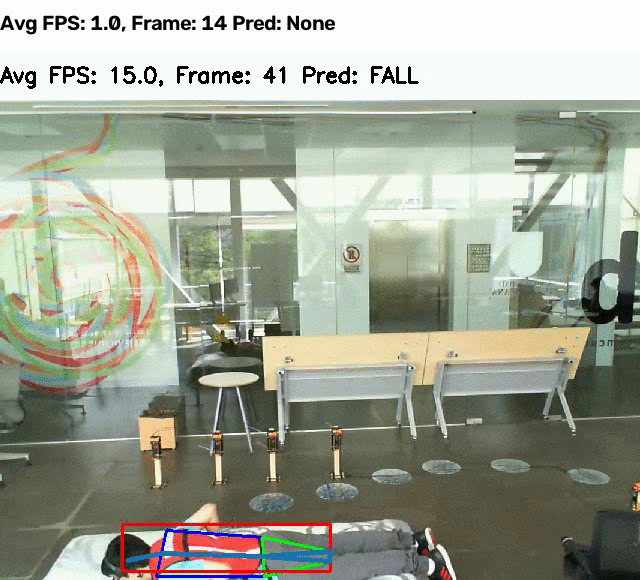
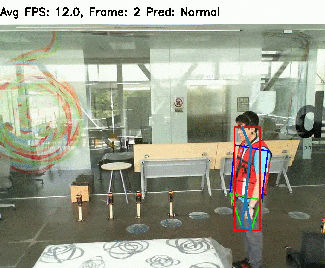
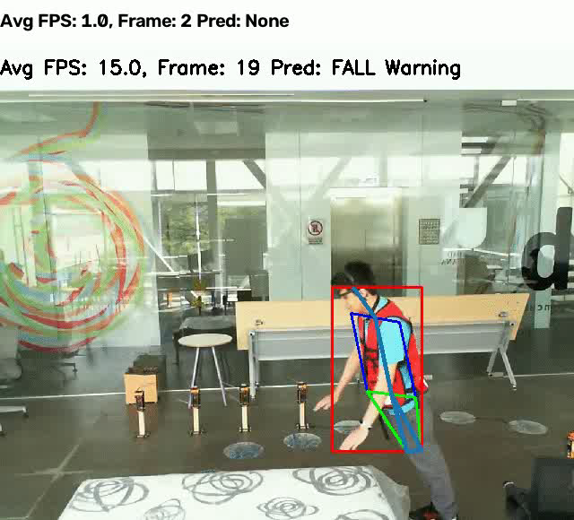

Patient Fall & Posture Monitoring
A pose-estimation model watches patient position around the clock and flags falls or unsafe movement instantly — multi-camera, multi-person, running on ordinary CPUs, no wearables required.
Why VitaSentinel
Built for the ward, not the lab
A camera and a laptop are enough to start protecting patients from unwitnessed falls.
Always-on watch
Runs continuously against a live feed or recorded video — no staff member needs to be in the room.
Instant alerting
Falls are classified frame-by-frame, so caregivers are notified the moment it happens, not after rounds.
Multi-patient tracking
Tracks several people across several camera feeds at once, keeping each person's pose history separate.
Privacy-friendly
Only skeletal keypoints are analyzed — no facial recognition, no biometric identity storage.
See it work
Skeleton-level pose tracking, in real time
Every frame is reduced to body keypoints, then scored against a fall signature.

From raw video to a fall alert
Five spatial and temporal features are extracted from the pose skeleton on every frame and fed to an LSTM classifier trained to recognize the fall signature. The frame on the left is a real output from this repository's own pipeline run — not a mockup.
- Bounding-box aspect ratio collapse
- Torso angle relative to vertical
- Rate of change between frames
- Ground-proximity of keypoints


Pred: NonePred: FALLPipeline
How it works
Capture
Ingest one or more camera / RTSP / video-file feeds.
Pose estimation
OpenPifPaf extracts body keypoints for every tracked person, per frame.
Feature extraction
Temporal & spatial features are computed from the keypoint trajectory.
LSTM classification
An LSTM scores the sequence as Fall or No Fall and raises an alert.
Attribution
Credits
MIT License.
Pose estimation is powered by OpenPifPaf.
This page only changes branding and packaging — all detection logic belongs to the original authors.
Please cite their paper: “Multi-camera, multi-person, and real-time fall detection using long short term memory”, SPIE Medical Imaging 2021.